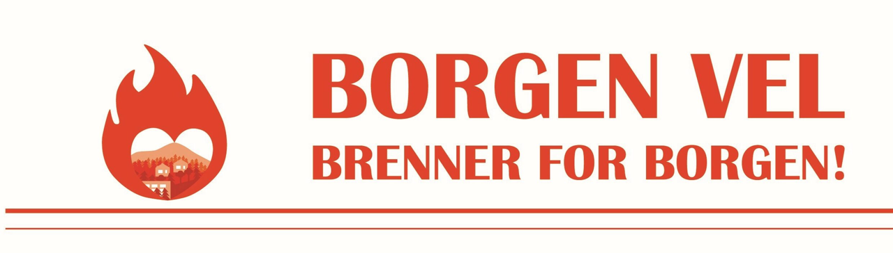
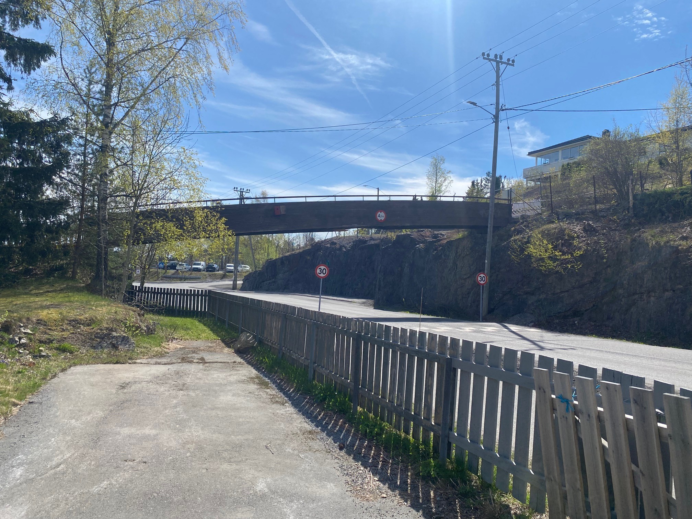
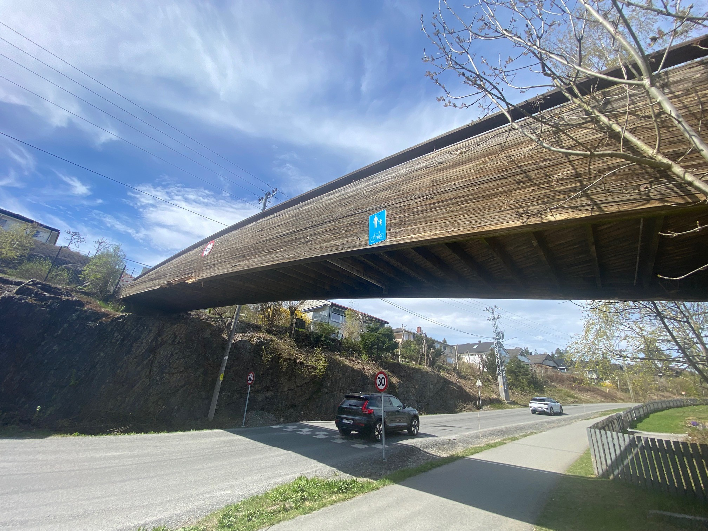
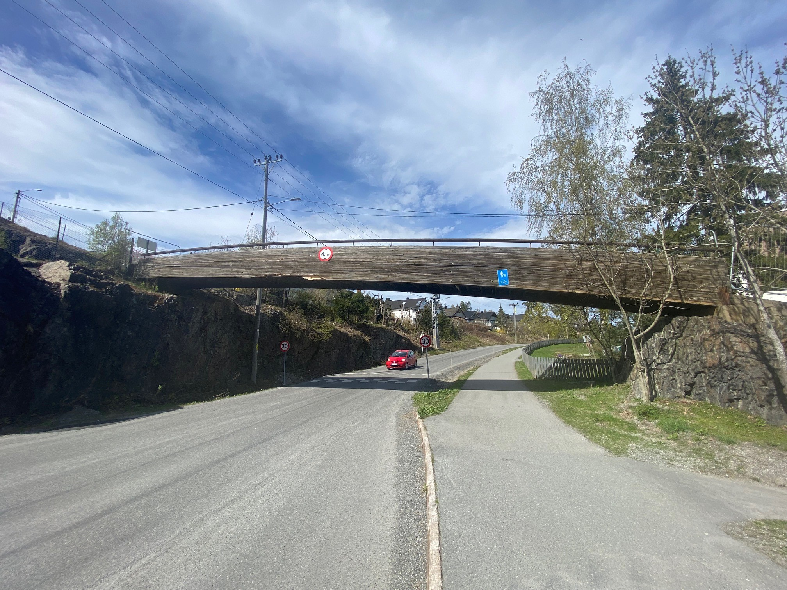

Borgenveien gang- og sykkelbru er en viktig skolevei for barn og en trygg forbindelse til buss og tog for beboere på Borgen.
Nå vurderer Asker kommune å ikke erstatte bruelementet – saken vil avklares politisk.
Brua binder øvre og nedre Borgen sammen. Den brukes av barn, ungdom, foreldre, pendlere og beboere hver eneste dag.
Brua gir barn en tryggere vei til Rønningen skole.
Viktig forbindelse til buss og tog for hele nabolaget.
Knytter øvre og nedre Borgen sammen.



Brua ble påkjørt.
Asker kommune demonterer bruelementet.
Elisabeth Holter-Schøyen (Venstre) stilte spørsmål til administrasjonen i formannskapet:
1. Er dette en forsikringssak hvor ansvarlig for påkjørselen må dekke kostnadene for istandsettelse?
2. Hvor store er skadene og hvilke umiddelbare konsekvenser får dette?
3. Hva vil en ny bru koste?
4. Hva vil en reparasjon av brua koste?
5. Hva er kostnaden med å heise bruelementet ned og sende det til reparasjon?
Administrasjonen ved Ragnar Sand Fuglum svarte at brua tas ned denne uken. Kommunen jobber med nødvendige avklaringer og kommer tilbake til formannskapet.
Se opptaket fra formannskapetMobilisering på Borgen for å bevare og reetablere gangbrua.